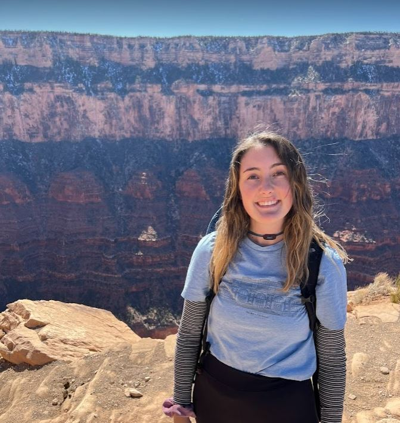

Hello! My name is Julia Matthews!
This is a picture of me!
I am from Fort Worth, Texas!
Also known as the "Land of the Longhorns". As you can see from the art mural in the background, my city is proud of its heritage!
I want to further introduce myself by introducing what I love to do!
One of my favorite things to do is sing! I have spent many years competing as a vocalist in the state of Texas. This is one of my favorite videos of me singing, and was taken while I was serving as a missionary in Campinas, Brasil.
I also love to travel! Some of the best places I have been to are:
My most recent adventure was to the Grand Canyon in Arizona! I traveled there to hike because I love nature, and it didn't dissapoint!
One of the other things I love to do is write! I have posted many of my writings on my Facebook page, which you can see by clicking the link below!
Link to my Facebook pageThere are so many more things that make up the person that I am. I hope you enjoyed just learning about a few of them!
Back to the top of the page